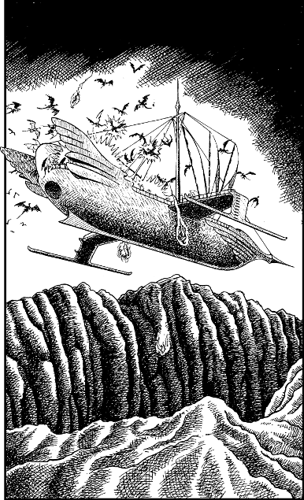

302
You watch with mounting fear as the horde of winged creatures circle and dive repeatedly into the ravine. They are met by intermittent flashes of magical energy which illuminate the gloom; Lord Rimoah and his young crewmen are putting up a spirited defence of their grounded skyship.
Then you see an unexpected sight: Cloud-dancer rises out of the gully and ascends rapidly into the darkening sky. You magnify your vision and witness a bloody battle raging along her decks as the winged beasts attempt to wrest control of the helm. You watch helplessly as the beleaguered skyship powers away towards the east, pursued by the flying swarm of ravening beasts.

When the squad of Imperial Guards catch sight of Cloud-dancer fleeing eastwards, their leader raises his hand and signals his men to advance. Using your enhanced vision, you focus on the leader and your Kai senses reel at the aura of evil surrounding him. You sense that this power does not emanate from him directly; it flows around a mace-like weapon which he carries sheathed in his belt. It is the Claw of Naar, and even at a distance its malignant power fills you with unease and foreboding.
With bated breath, you watch the Autarch’s men come marching along the narrow trail. Captain Gildas gives the signal to Durasso to spring the ambush, and the ranger tugs hard on the rope in his hands. There is a moment of silence; then a thunderous rumble reverberates through the mountains. A billowing cloud of thick dust engulfs the trail and you lose sight of the squad as a thousand tons of rock and rubble cascade towards them.
Pick a number from the Random Number Table. If you possess Grand Huntmastery, add 1 to the number you have picked.
If your total score is now 5 or lower, turn to 238.
If it is 6 or higher, turn to 30.